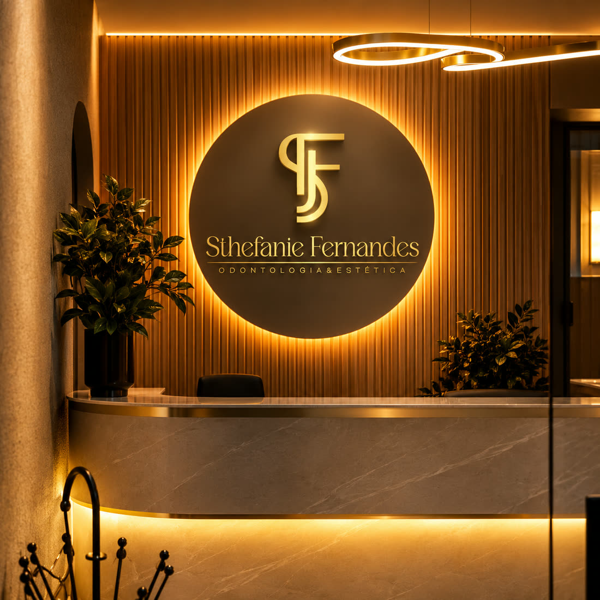
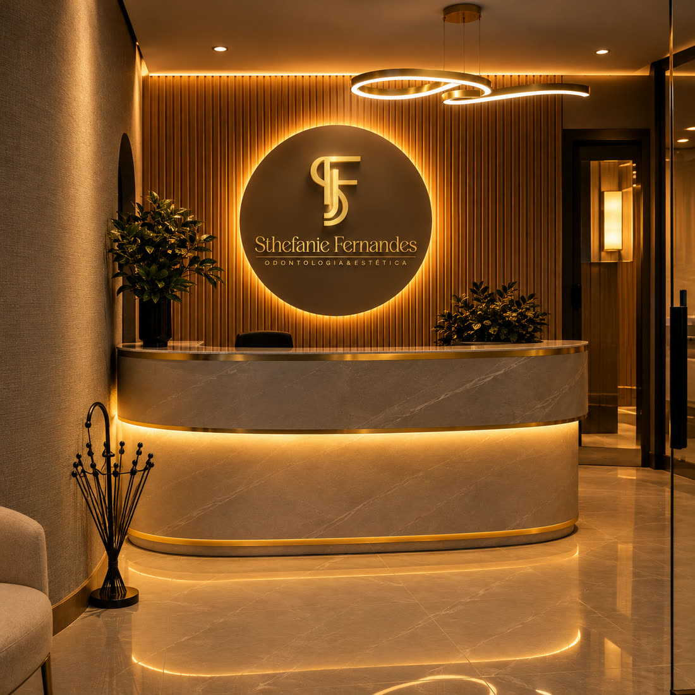
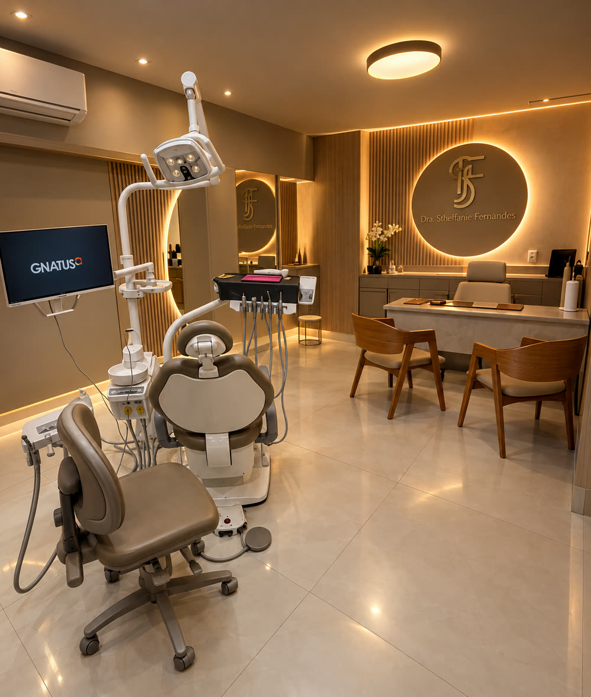
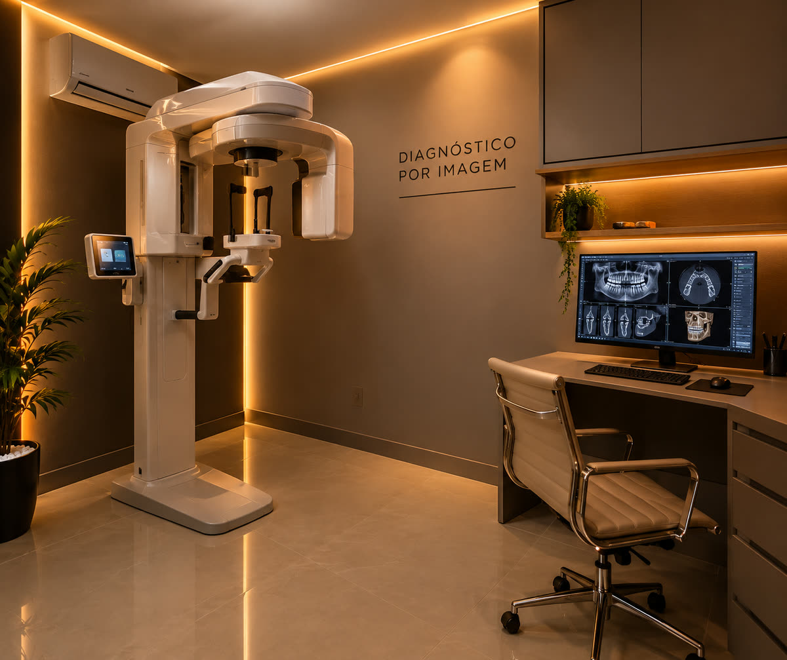
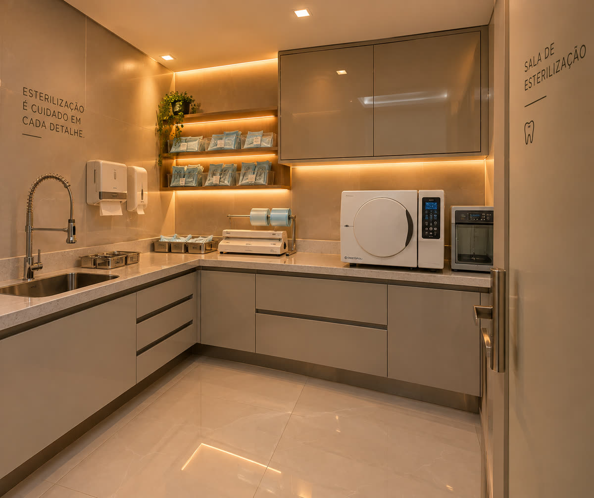
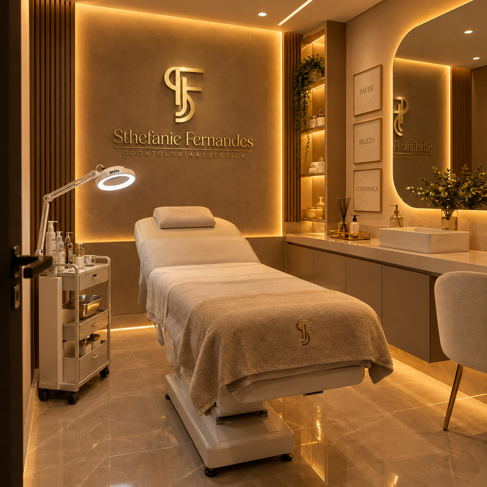
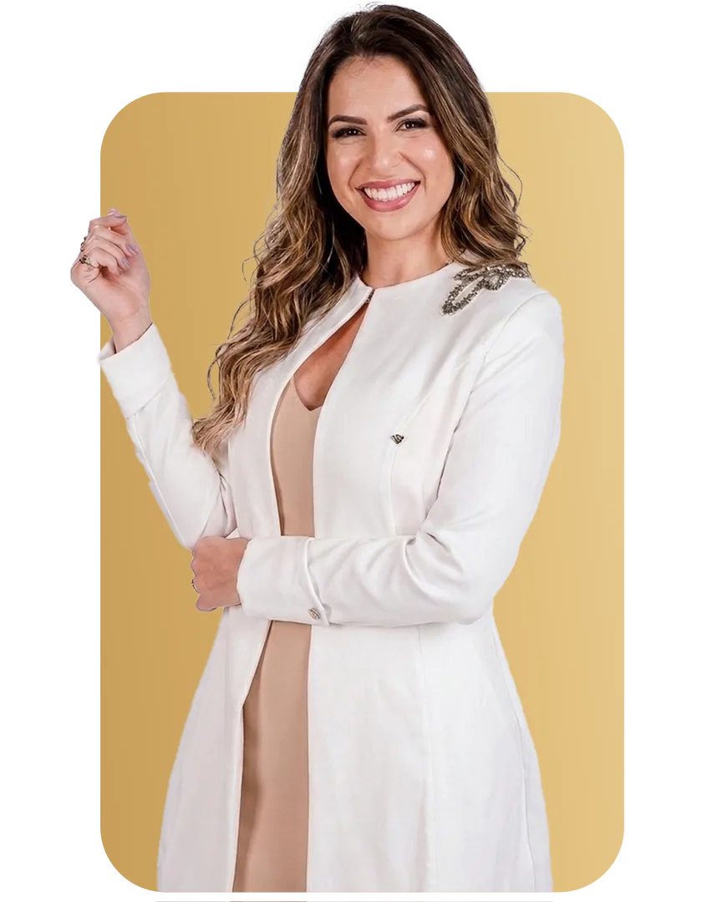

Clínica Sthefanie Fernandes
Referência em odontologia
e estética em Buritis, BH
Na Clínica Sthefanie Fernandes, você encontra um cuidado completo para o seu sorriso e sua beleza, unindo tecnologia, experiência e tratamentos personalizados para proporcionar resultados naturais e valorizar ainda mais a sua autoestima.
Estética Dental
transformados
em primeiro lugar

Diferenciais
Cuidar de você por inteiro,
com excelência em cada detalhe.
A clínica reúne, num só endereço, todas as especialidades odontológicas e os tratamentos de estética facial e corporal, com profissionais qualificados, estrutura moderna e recursos tecnológicos para diagnóstico e exames.
Mais do que tratar, cuidar. Mais do que transformar, valorizar a sua essência.
Como cuidamos
Do primeiro olhar ao resultado final.
Cada tratamento começa por entender o que você precisa. O diagnóstico é digital e compartilhado na tela, o planejamento é explicado passo a passo e o acompanhamento segue depois do procedimento.
-
01 · Acolher
Escuta e avaliação
Tempo para entender sua queixa, sua rotina e o que você espera.
-
02 · Diagnosticar
Diagnóstico digital
Imagem e raio-X na própria clínica, visíveis com você no monitor.
-
03 · Planejar
Plano explicado
Cada etapa apresentada com clareza antes de começar.
-
04 · Acompanhar
Cuidado contínuo
Retornos e manutenção para o resultado durar.
Mais do que tratar, cuidar. Mais do que transformar, valorizar a sua essência.
Espaço planejado
Estrutura
Conforto, acolhimento e tecnologia em cada detalhe.
Nossa clínica foi planejada com muito cuidado para oferecer um ambiente moderno, confortável e acolhedor, aliado aos mais rigorosos critérios de biossegurança e recursos tecnológicos para diagnósticos e exames.

01 RecepçãoRecepção
Enquanto você espera, já começa a vivenciar a experiência da clínica.
Pensada para ser acolhedora, confortável e com atendimento ágil para tornar sua espera ainda mais tranquila. Na TV, você conhece os tratamentos e serviços realizados na clínica antes mesmo de seu atendimento.

02 ConsultóriosConsultórios
Tecnologia e conforto para cuidar do seu sorriso.
Consultórios modernos, confortáveis e com tecnologia de ponta. As cadeiras oferecem recursos que tornam o atendimento ainda mais agradável, incluindo função de massagem. Com diagnóstico digital em tempo real, o paciente visualiza na tela, junto com o dentista, cada detalhe da sua saúde bucal.

03 Diagnóstico por ImagemDiagnóstico por Imagem
Precisão, segurança e agilidade imediata.
Em muitos casos o diagnóstico por imagem é etapa decisiva para avaliar a saúde bucal e definir o melhor planejamento. Por isso você realiza o exame sem sair da clínica e sem precisar procurar uma clínica de radiologia odontológica.

04 EsterilizaçãoEsterilização
Cuidado e segurança em cada detalhe.
Nossa sala de esterilização segue rigorosamente as normas de segurança e biossegurança da Vigilância Sanitária. Os instrumentais passam por limpeza em lavadora ultrassônica, com água aquecida e detergente bioenzimático, e em seguida são preparados e esterilizados em autoclave.

05 Salas de EstéticaSalas de Estética
Um momento só seu.
Planejadas para proporcionar um ambiente acolhedor, tranquilo e relaxante, tornando cada atendimento uma experiência especial. Seja na estética corporal ou facial, cada detalhe foi pensado para que você desacelere, relaxe e aproveite seu momento de autocuidado.
Nossas especialidades
Tratamentos especializados.
Excelência odontológica e procedimentos estéticos modernos para cuidar de você com precisão e delicadeza.
Odontologia especializada em BH
Lentes de Porcelana & Facetas
Lâminas ultrafinas de porcelana que corrigem cor, formato e proporção dos dentes com naturalidade impecável.
Endodontia (Tratamento de Canal)
Tratamento endodôntico de precisão digital para salvar dentes e eliminar infecções de forma rápida e indolor.
Implantes Dentários & Próteses
Reabilitação funcional e estética com implantes e próteses modernas, restaurando a firmeza e a mastigação.
Clareamento Dental Laser
Procedimento supervisionado para clarear tonalidades do esmalte com rapidez, segurança e proteção da gengiva.
Profilaxia (Limpeza Dental)
Remoção completa de placas e tártaro com ultrassom, mantendo a gengiva saudável e o hálito renovado.
Restaurações em Resina
Reconstrução anatômica imediata de dentes cariados ou lascados com resinas biocompatíveis da cor do dente.
Ortodontia & Invisalign
Alinhadores transparentes e aparelhos fixos estéticos para alinhar o sorriso com máximo conforto e discrição.
Periodontia
Tratamento e prevenção de inflamações na gengiva, sangramentos e suporte ósseo dos dentes.
Odontopediatria
Atendimento acolhedor e gentil dedicado à saúde bucal de bebês, crianças e adolescentes.
Cirurgias Diversas
Extração de dentes inclusos, sisos e cirurgias periodontais com técnicas minimamente invasivas.
Estética facial, corporal & bem-estar
Tratamento Calvície
Protocolos capilares avançados com bioestimulação para reativar folículos capilares e combater a rarefação.
Tratamento para Queda Capilar
Nutrição profunda do couro cabeludo que interrompe a queda excessiva e fortalece fios enfraquecidos.
Botox
Aplicação de toxina botulínica para amenizar linhas na testa e pés de galinha, além de controle do bruxismo.
Harmonização Orofacial
Preenchimentos labiais, contorno mandibular e bioestimuladores para valorizar traços naturais com simetria.
Drenagem Linfática
Técnica manual suave para diminuir inchaços, eliminar toxinas acumuladas e ativar a circulação corporal e facial.
Massagens Relaxante e Modeladora
Manobras relaxantes para aliviar tensões musculares aliadas a técnicas para modelar o contorno corporal.
Limpeza de Pele
Higienização profunda com extração de impurezas, desobstrução de poros, hidratação e luminosidade imediata.
Extensão de Cílios
Alongamento seguro fio a fio que destaca o olhar com volume, curvatura perfeita e aspecto elegante.
Sobrancelhas
Design anatômico e definição precisa para realçar a moldura do olhar em harmonia com as proporções do rosto.
Responsável técnica
À frente dessa nova forma de cuidar de você.
Dra. Sthefanie Fernandes
Responsável técnica e idealizadora da clínica, traz para o atendimento sua experiência, conhecimento e dedicação à Odontologia, num espaço em que excelência profissional, tecnologia e acolhimento caminham juntos.
Cada detalhe da clínica foi cuidadosamente pensado para proporcionar uma experiência diferenciada, com atendimento próximo e humanizado, dentro de uma proposta de cuidado integral em que odontologia e estética caminham juntas.
CRO-MG 53893 · EPAO: CRO-MG 6789

Depoimentos
Reconhecimento de quem confia
A satisfação e o acolhimento refletidos em depoimentos de nossos pacientes.
“Estrutura impecável no Buritis. A cadeira com massagem relaxa demais e poder ver o dente na tela junto com a dentista traz uma segurança que nunca tive antes.”
“Fiz tratamento de canal com total tranquilidade, sem dor nenhuma. Dra. Sthefanie é de uma delicadeza e competência sem igual. A equipe toda está de parabéns!”
“Lugar maravilhoso que une odontologia com estética. Faço minha drenagem e procedimentos com total conforto. Ambiente acolhedor e muito cheiroso!”
Talvez você não precise de mais um tratamento apressado.
Talvez precise de quem cuide de você por inteiro.
Seu sorriso. Sua beleza. Seu momento.